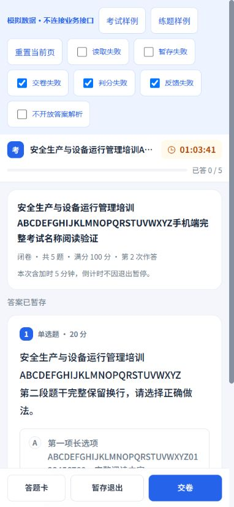
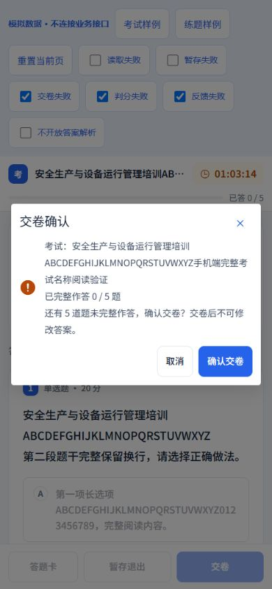
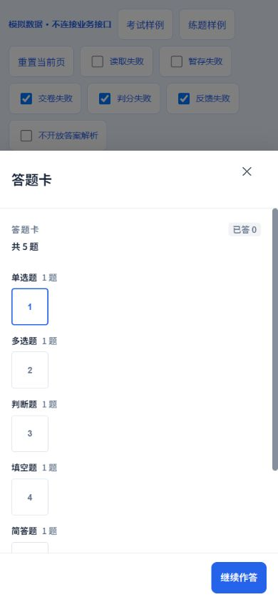
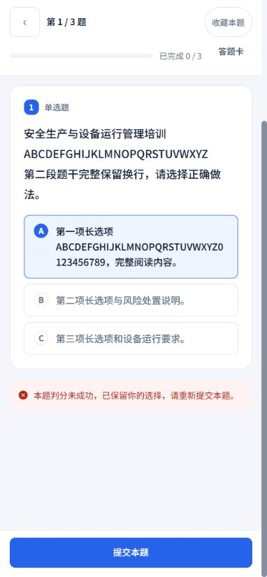
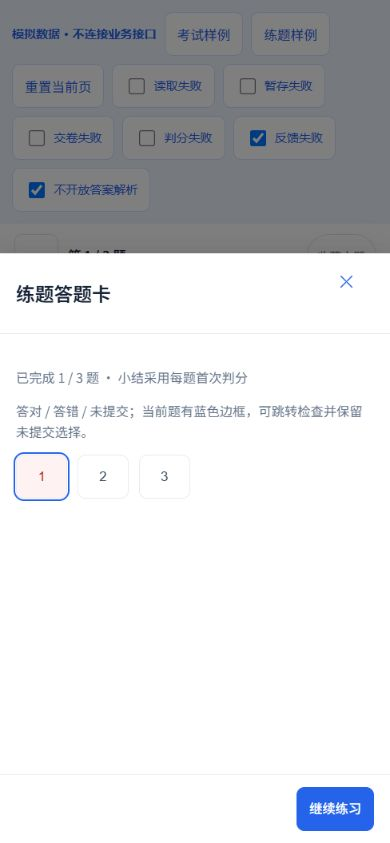
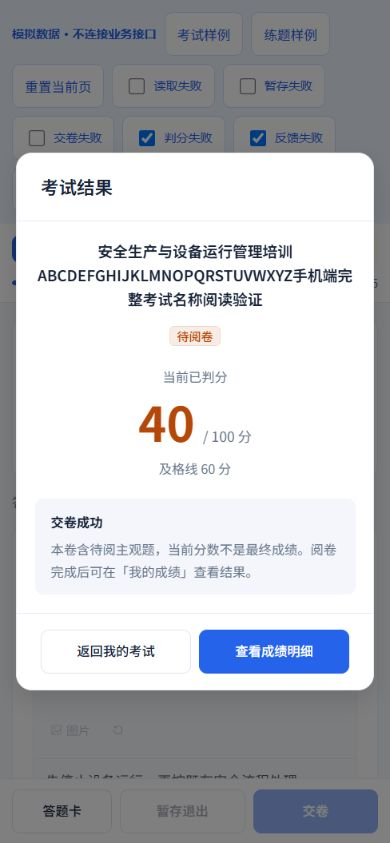
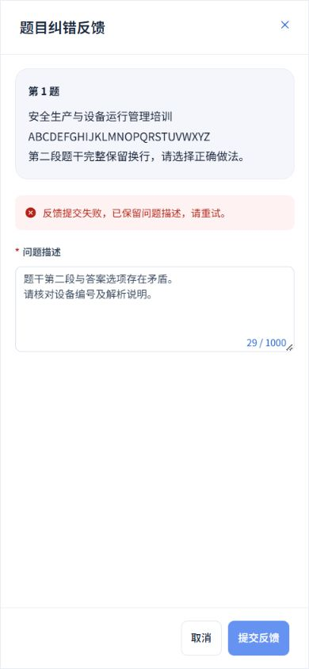
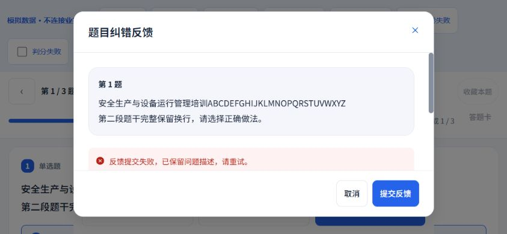
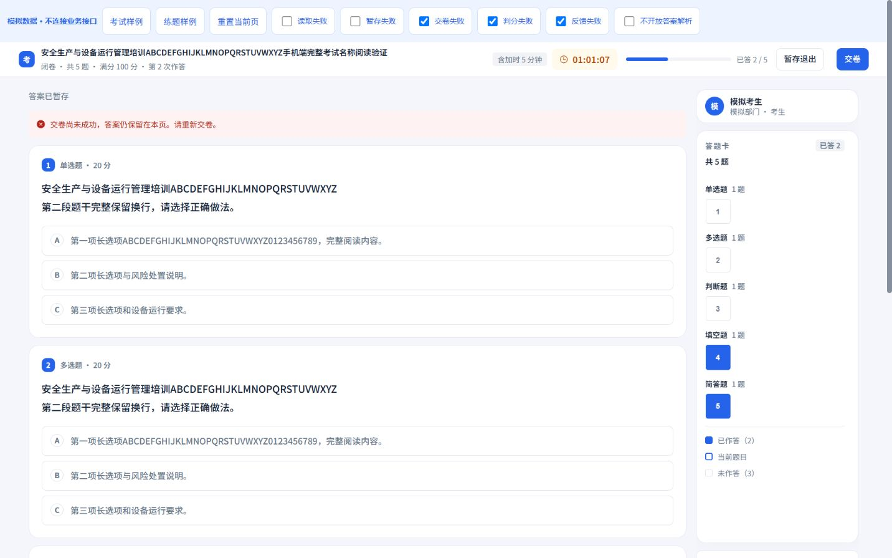
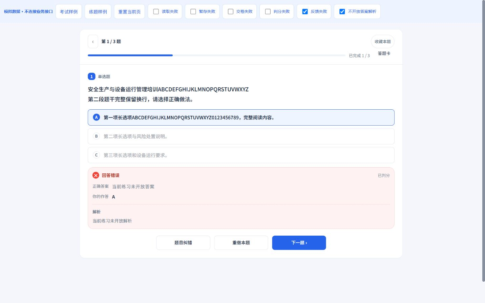

2026-10-20 · Workbuddy 01 · 本轮本地实施：考试答题、练题答题、答题卡与纠错弹窗
作答状态清楚，失败内容可恢复
延续浅灰蓝底、白卡、蓝色操作及16 px圆角；答题页保留专注布局，手机单题作答与固定底栏，桌面考试保留分栏答题卡。新增纠错弹窗沿用服务端题目及会话归属核验。
本轮落地
- 手机正文完整显示考试名称、题量、满分、作答次数和本人加时；顶部倒计时和底部答题卡、暂存退出、交卷操作常驻。保留开闭卷及原个人时长规则。
- 交卷和暂存退出确认包含完整考试名及真实完整作答数，未答按原规则计算；长名称在确认框内换行。退出后的恢复策略与倒计时说明保持原设置。
- 考试答题卡保持五类题型分组及全卷连续编号；处理中题号禁用，跳转后聚焦当前题目。填空只有全部填写才计为已答；简答继续支持原富文本和图片能力。
- 考试交卷失败保留答案并滚动到本地提示，原先的重新暂存入口继续保留；确认期间到时仍能按原规则自动交卷。保留切屏上报、水印、复制限制和安全阈值。
- 练题判分失败就地提示、保留原选择，并将提示滚动到可见位置；重试成功才显示判分，切题或重做清除旧错误。判分中防重入并阻止中途离开，首判统计不因重做改变。
- 练题答题卡明确显示首次判分口径、正误及未提交状态，保留未提交选择并提供“继续练习”。跳转后聚焦题目；手机操作至少44 px。
- 纠错由短输入提示改为独立弹窗，冻结原题编号、完整题干及来源ID；1000字必填说明与服务端一致。空白就地校验聚焦，处理中禁止关闭和重复请求，失败保留说明并定位提示；手机全屏，正文滚动和固定底栏。
- 桌面练题外卡及上下子区域统一16 px圆角，判分反馈区使用16 px圆角。答案和解析关闭时仍按原接口字段隐藏。
验证边界
本轮使用真实Vue组件配合独立模拟接口验证，所有题目、分数与会话均为样例。未开始或提交真实考试、创建真实练题会话、上传图片或发送真实纠错反馈。服务端、题型、权限、考务与安全配置未改动；安全行为通过既有及新增回归用例核验。
样例覆盖考试5类题型、填空不完整状态、简答文本输入、暂存失败、交卷失败及重试后的待阅卷结果；练题覆盖选择保留、判分失败恢复、答案解析关闭、纠错必填和失败草稿、答题卡、读取失败及重试。
手机作答与确认












可恢复纠错弹窗



桌面布局


验证结果
- 7个测试文件共32项通过：串行暂存、失败恢复、原始来源ID、重复提交保护、确认中到时自动交卷、五类答题卡编号、完整填空计数、首判统计及答案解析可见性等。
- 30组布局测量覆盖320×740、390×844、844×390、1440×900，未发现整页或弹窗横向溢出，所测弹窗底栏均在视口内。手机底部作答按钮至少44 px。
- TypeScript、生产构建、设计脚本语法及Git差异空白检查通过；补充设计接入目录，既有页面ID保持。